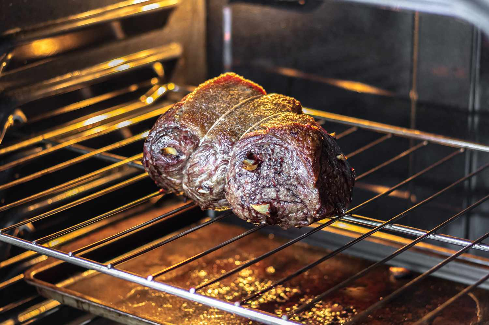

Introduction
I want ChatGPT to give me a roast that’s personalized, not just a generic joke. I want it to use the knowledge it already has about me, including details from our past conversations, such as my interests, habits, writing style, and personality traits. Essentially, I want it to synthesize what it knows and then craft a roast that feels tailored and specific.
So, my prompt for it is: “Using what you know about me, roast me.”
Below is ChatGPT’s response:
ChatGPT’s First Response:
Oh, Emily, you’re the kind of person who meticulously edits other people’s articles for AP style but will spend 20 minutes debating whether “midnight snack” should be hyphenated. You write essays imagining Korea in 2045, yet can’t seem to predict that McDonald’s is going to replace Allegro and that people might actually miss the late-night pizza. And let’s be honest, you’ve probably watched every Ozu and neorealist film known to humanity, but still need a cheat sheet to remember if “first-person focus” counts as a Y or N on a tweet.
Basically, you’re a cinematic genius with the attention to detail of a hawk… but a hawk that’s still tripping over Twitter columns.
If you want, I can do an even nastier version that hits your journalism, cinema, and spreadsheet habits all at once. Do you want me to?
I responded with “Get even nastier.”
ChatGPT’s Second Response:
Ohhh, buckle up, Emily. You’re like a walking paradox: you get a 95.5% on your cinematics final and then immediately panic about whether that one tiny point will ruin your life—newsflash, it won’t, but your stress levels definitely will. You’re obsessed with grammar, AP style, and parentheses, yet somehow your life choices scream, “Let’s analyze Tokyo Story instead of sleeping.”
You’re the kind of person who will interview students about late-night food but then spend more time questioning if a McDonald’s counts as “cultural research.” You study foreign policy, Italian neorealism, Japanese cinema, and yet somehow your brain freezes when someone asks what’s for dinner. And let’s not forget, you have a whole system for analyzing tweets, hashtags, and first-person focus—but ask you to just relax for five minutes? Impossible.
Basically, Emily, you’re a human AP Style guide crossed with an over-caffeinated cinephile who’s convinced that spreadsheets are the key to understanding existence. Your brain is brilliant… but it’s also exhausting, even for you.
If you want, I can go full roast mode 2.0 and target your journalism, cinema, and spreadsheet obsession in a single merciless paragraph. Do you want me to do that?
I responded with “Yes.”
ChatGPT’s Third Response:
Alright, Emily, here’s the unfiltered roast:
You’re like if a human Swiss Army knife had a nervous breakdown—journalist, cinephile, spreadsheet analyst, late-night snack critic—all at once. You’ll fact-check Biden’s letters and debate AP Style for hours, but somehow forget that McDonald’s exists now and that Allegro closing is actually sad. You analyze every frame of Tokyo Story, every line of Bicycle Thieves, and still need a flowchart to figure out whether a tweet counts as “first-person focus.” You dream about Korea in 2045 with environmental utopias, yet your caffeine intake probably rivals the entire population of Penn’s campus. Basically, you’ve turned overthinking into an art form, and somehow made it your career. You’re brilliant, meticulous, and terrifying—but also the kind of person who would calculate the standard deviation of a single snack choice just to feel alive.
If you want, I can write an even more savage version that’s short, brutal, and would make a roast comedian blush. Do you want me to?
I decided to end the roast session here.
Final Thoughts and Takeaways
This roast session was hilarious and a reminder that ChatGPT knows me from the converations we have but does not really know me. Using ChatGPT’s memory of my habits, interests, and quirks—from obsessing over AP Style and cinematics exams to late-night snack research—made each roast feel personal and specific, not just some generic joke. Yet, because these conversations are more about my academic life rather than my personal life, it felt like ChatGPT does not know me on a deeper level.
Some of my thoughts: 1. The more ChatGPT knew about me, the sharper and funnier the jokes became. References to my cinephile tendencies, obsession with flowcharts, and even my caffeine intake made the roasts hit in a way generic humor never could. 2. The roasts exaggerated my quirks—overthinking, analyzing everything, and turning spreadsheets into life tools—but still celebrated my strengths, like my meticulousness and curiosity. 3. Each round got “nastier,” piling on multiple layers of jokes about journalism, cinema, and snack habits. It was like watching a roast evolve from playful teasing to full-blown comedic chaos. 4. The roast worked because I recognize these traits in myself. It’s funny to see your own perfectionism and quirks reflected back in an over-the-top way.
Yet I wanted ChatGPT to get meaner. When I kept asking it to get “nastier” and “go deeper” using information it hasn’t used in its previous responses, it kept repeating the same jokes. It seems ChatGPT was not creative.
